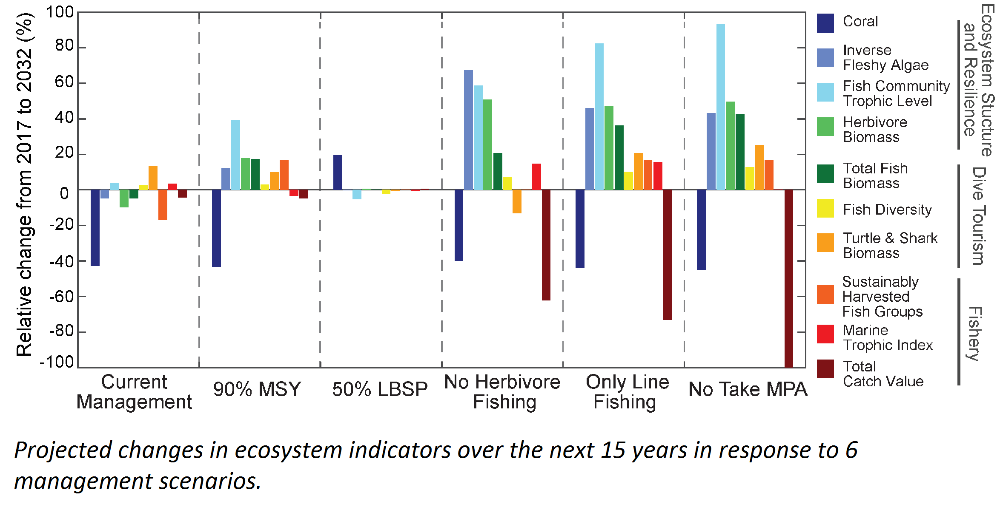
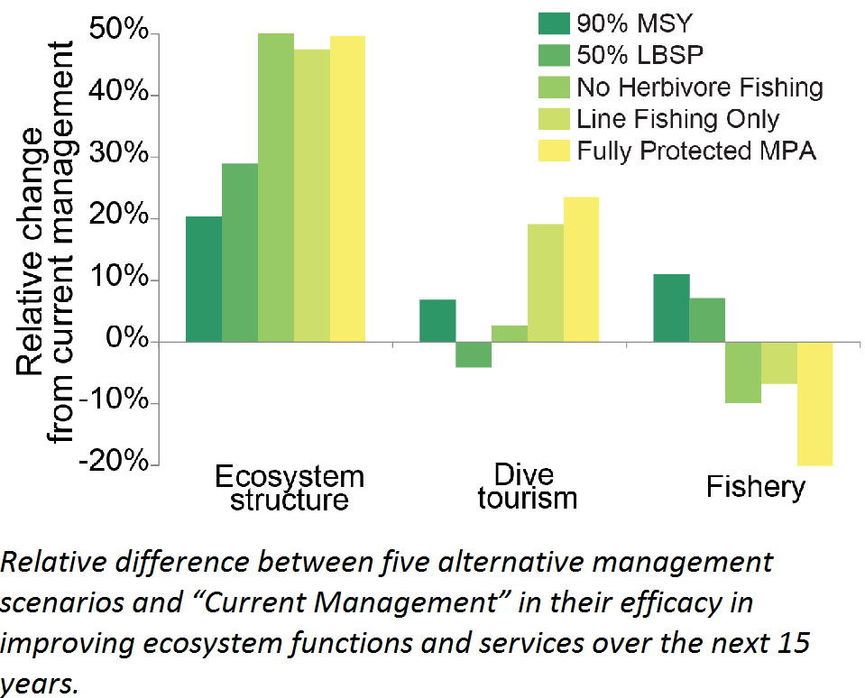

An Evaluation of Management Strategies
West Hawai‘i Project
The ocean off the west coast of Hawai‘i Island is home to vibrant coral reefs, fish, green sea turtles, spinner dolphins, whales, and manta rays. West Hawai‘i has the largest expanse of intact and actively growing coral reef in all of the main Hawaiian Islands. The wide array of ocean life makes west Hawai‘i incredibly important for marine biodiversity and human society. The coastal ocean and coral reefs provide seafood, resources for tourism and recreation, protection from wave and storm impacts, and the preservation of cultural practices. But the ecosystem is also vulnerable to the pressures of an increasing population, coastal development, fishing, pollution, and climate change.
Current management is not adequate to prevent further declines in marine resources. Banning all gears other than line fishing, or prohibiting take of herbivorous fishes, were most effective at enhancing reef structure and resilience, diver tourism, and the recreational fishery. In collaboration with researchers from the Hawai‘i Division of Aquatic Resources and The Nature Conservancy, the West Hawai‘i IEA evaluated how different management strategies would benefit the coastal marine ecosystem and coral reef health for one specific area: Puakō, in West Hawai‘i. Our recent study provides a range of options to protect and restore this valuable marine ecosystem for the future. Managers can use the results of this study to weigh trade-offs for different stakeholder groups and understand likely trends of their chosen scenario.
Even under high severity climate change, local management could improve the ecosystem services evaluated. The findings for this study highlight that a combination of fisheries regulations and reducing land-based pollution would improve coral reef ecosystems and increase the potential to mitigate climate change impacts.
Management scenarios
In addition to no change in management, five other management strategies were selected for evaluation in collaboration with senior staff of the State of Hawaii Division of Aquatic Resources. The six management strategies evaluated were:
- No change in current management
- Reduced fishing (90% MSY)
- Reduced land-based source pollution (50 % LBSP)
- No fishing of herbivores
- Line-fishing only
- No take Marine Protected Areas
These management strategies were evaluated by measuring their impact on three ecosystem services:
- ecosystem structure and resilience
- dive tourism
- recreational and subsistence fisheries
These ecosystem services are important to ecosystem stability and human well-being.
Local pressures considered were:
- fishing (net, spear, and line fishing)
- land-based sources of pollution (sewage overflow, etc.)
We anticipate an annual increase in the fishing effort based on projected population growth. Land-based source pollution was assumed to be nutrients and bacteria from cesspools and septic tanks.
Global pressures: Climate change and future coral bleaching events were incorporated
We assessed how much better or worse the 3 ecosystem services would be in 15 years if each of the different management scenarios was implemented compared to the current management scenario.
Selecting the "best" management strategy
Maintaining the status quo is projected to result in less highly prized fish, such as jacks, parrotfishes, snappers, unicorn fishes and chubs, whereas undesirable fish species increase (moray eels, hawkfishes, tobies, and porcupine fishes). Additionally, coral reefs will likely become dominated by algae.
All of the other management options show improvements in ecosystem structure and resilience. However, reducing land-based sources of pollution was the only scenario where coral cover increased.
The reduced fishing scenario (90% Maximum Sustainable Yield [MSY]) shows positive gains in all three ecosystem services, including the largest to fisheries, however, gains were minimal in comparison to other management options.
The scenario with only line-fishing represents the most balanced trade-off for all indicators with positive gains for both ecosystem structure and resilience and dive tourism and only moderate losses for fisheries.
While banning all fishing gears other than line fishing, or prohibiting take of herbivorous fishes, were most effective at enhancing reef structure and resilience, diver tourism, and the recreational fishery, no management solution simultaneously promotes recovery of ecosystem stability while also maximizing the delivery of ecosystem services. Selecting the "best" management strategy for the region depends on the desired balance between enhancing ecological benefits (i.e., improved ecosystem structure and resilience) and improving socio-economic benefits to fishermen and dive tourists. However, by elucidating tradeoffs and evaluating a range of potential management options, managers can make a more informed decision with the most beneficial outcome.
More information and a link to the publication can be found here.



